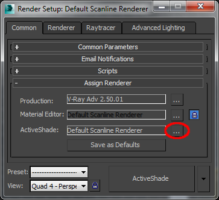
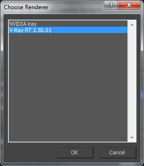
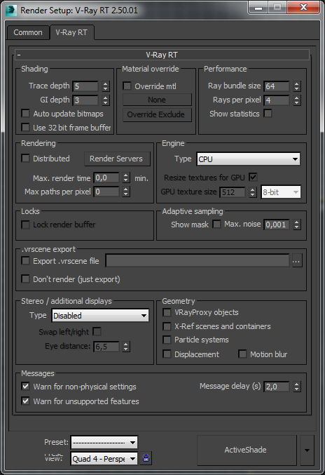
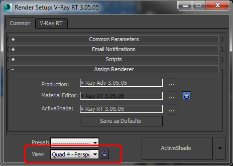
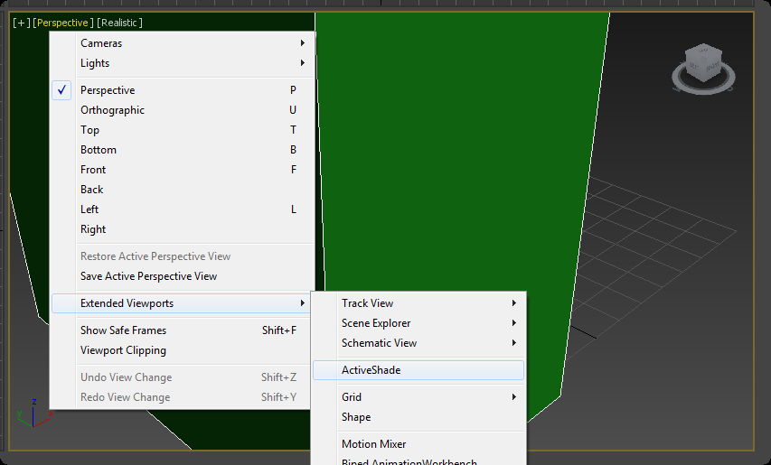

V-Ray RT
V-Ray RT Overview
V-Ray RT is an ActiveShade rendering plugin for 3ds Max. To start using it you must first select it in the Assign Renderer rollout found in Render Setup dialogue:

Select V-Ray RT in the dialogue that appears:

V-Ray RT can work both as an "ActiveShade" renderer and as a "production renderer".
To use the GPU engine you need video card that supports following:
-
OpenCL 1.1 or higher
-
CUDA 2.0 or higher
-
The CUDA engine or V-Ray RT GPU works on NVIDIA cards with the Fermi and Kepler architectures.
-
For users of NVIDA cards, we recommend the use of CUDA engine when rendering with V-Ray RT GPU.
V-Ray RT Options
 To access the settings of V-Ray RT you need to switch to Active Shade rendering.
Shading
Trace depth - Represents the maximum number of bounces that will be computed for reflections and refractions. The individual material reflection/refraction depth settings are still considered, so long as they don't exceed the value specified here.
GI depth - the number of bounces for indirect illumination. Other GI settings (i.e.. whether GI is enabled or disabled) are taken from the production V-Ray renderer.
Auto update bitmaps - if this option is enabled, V-Ray RT will try to automatically update the rendered image whenever one of the bitmaps used in the scene is changed on the disk.
Use 32 bit frame buffer - if enabled, V-Ray RT will attempt to create a floating-point 32-bit frame buffer which contains HDR information.
Material override
Override mtl - This option allows the user to override the scene materials when rendering. All objects will be rendered with the chosen material, if one is selected, or with their assigned materials if no material is specified.
None - the slot to connect the material
Override Exclude - Clicking this button brings up the 3ds Max Include/Exclude dialogue which allows you to select which objects the override material is applied to.
Performance
The parameters in this section affect the performance of V-Ray RT. Note that the optimal values for a given machine and network configurations may be different from the defaults. The user is encouraged to experiment with these values to find the optimal ones.
Ray bundle size - This controls the number of rays that are sent to the V-Ray RT render servers for processing. When using distributed rendering, the smaller sizes cause more frequent client/server communication with smaller network packets thus decreasing the speed of the renderer but increasing the interactivity and vice versa. Note that this number is not the exact amount of rays, but is proportional to it. It is not recommended to increase this value beyond 512.
Rays per pixel - The number of rays that are traced for each pixel during one image pass. The greater the value, the smoother the picture from the very beginning of the rendering with GI, but interactivity may be significantly diminished. Increasing this value also reduces amount of data transferred from the render servers back to client machine.
Show statistics - When this option is enabled, some useful values are shown in the upper right corner of the V-Ray Frame Buffer window:
-
V-Ray RT version;
-
Number of calculated camera paths (i.e. image samples) per second, in thousands (Kpaths/s)
-
Time elapsed since the current image started rendering. This value is reset whenever a change is made to the scene that requires recalculation of the image.
Rendering
Distributed - this option turns on distributed rendering for V-Ray RT. Use the Render Servers button to specify machines that will be used for distributed rendering.
Render Servers - This button opens the V-Ray interactive renderer DR settings dialog. See the Distributed rendering section for more information.
Max. render time - Specifies the maximum time (in minutes) for refining the image.
Max. paths per pixel - Specifies the maximum samples per pixel for refining the image. This option is useful when V-Ray RT is set as a production renderer to ensure consistent quality of the different frames..
Engine
Type - Specify the back-end for the RT engine. The possible values are:
-
CPU - the CPU engine is used. This engine does not require a graphics card and supports many of the regular V-Ray renderer features, including procedural textures and complex materials.
-
OpenCL (single kernel) - a GPU engine based on OpenCL is used. This engine uses graphics cards that support OpenCL and can be very fast depending on the hardware, but has somewhat limited abilities with regards to shaders. The OpenCL and CUDA engines have the same set of capabiltities, but for NVIDIA GPUs it is recommended to use the CUDA engine.
-
CUDA (single kernel) - a GPU engine based on the NVIDIA CUDA platform. This engine uses NVIDIA graphics cards that support CUDA and is the recommended engine for NVIDIA GPUs. Like the OpenCL engine, it can be very fast, depending on hardware, but has limited abilities with regards to shaders. The OpenCL and CUDA engines have the same set of capabilities.
Resize textures for GPU - enable this check box to resize big textures to a smaller resolution in order to optimize memory usage. This parameter is only effective when the Type is set to Open CL(single kernel) or CUDA(single kernel)
GPU texture size - when Resize textures for GPU is enabled this value specifies the resolution to which the textures will be resized.
It is recommended to use the CUDA engine on NVIDIA cards.
Locks
Lock render buffer - Locks the render buffer so no further changes to the scene are reflected in the rendering window (however V-Ray RT continues to refine the image). It should be noted that before V-Ray interactive renderer is started, this check box is disabled. During rendering if you check it on, it is disabled again making it impossible to restore interactivity once the buffer is locked. The only way to do that is by restarting the render completely.
Adaptive sampling
V-Ray performs adaptive sampling on the image, trying to put more samples into areas that have more noise.
Show mask - When enabled, the pixels that still need refinement are shown in red.
Max. noise - A threshold that determines when to stop refining a pixel. Higher values allow more noise in the image. Lower values try to reduce the noise. A value of 0.0 traces the entire image unconditionally.
.vrscene export
The .vrscene file format is the scene description format used by the standalone version of V-Ray. V-Ray RT allows you to export your 3ds Max scene to this format for subsequent rendering with V-Ray Standalone outside of 3ds Max. .vrscene files can also be exported directly from MaxScript using the vrayRTExportScene global MaxScript function.
Export .vrscene - If selected and full file path, name and extension are set, the 3ds Max scene is exported to the specified .vrscene file when V-Ray interactive renderer is started.
Don't render (just export) - Allows the scene to be only exported without being rendered. The ActiveShade session will be closed as soon as the .vrscene file is created. Note that currently the scene is exported only for the current frame, without animation.
Stereo / additional displays
V-Ray RT can render a stereo view of the scene in multiple formats. This section also allows to duplicate the RT engine output to another window that can be maximized on a second display.
Note that for the moment V-Ray RT ignores any VRayStereoscopic helpers in the scene; the stereo output is controlled only from the V-Ray RT options.
Whenever an additional window is displayed with this option, a double-click inside the window maximizes it. Another double-click inside the maximized window restores its original size. The additional windows are for display only - they don't support navigation like the ActiveShade window.
Type - Determines the type of additional (stereo) display:
-
Disabled - stereo rendering / additional display is disabled and a single image is rendered into the ActiveShade window;
-
Side by side - the left and right views are displayed in separate windows that can be maximized on different displays;
-
Interlaced - a separate window displays an interlaced blend of the left and right eye images. This is useful for displays that support interlaced stereo;
-
Checkered - a separate window displays a checker blend of the left and right eye images. This is useful for displays that support checkered stereo;
-
Anaglyph (Red, Cyan) - a separate window displays a red/cyan anaglyph preview of the stereo images. Matching glasses are required to view the stereo effect;
-
Anaglyph (Green, Magenta) - a separate window displays a green/magenta anaglyph preview of the stereo images. Matching glasses are required to view the stereo effect;
-
OpenGL stereo - a separate window alternates between the left and right eye images. Matching active shutter glasses and supporting video card are required to view the stereo effect;
-
Duplicate (mono) - this is not a stereo mode - it simply duplicates the contents of the ActiveShade window so that it can be maximized on another display;
Swap left/right - swaps the left and right eye images.
Eye distance - the distance between the two virtual stereo cameras, in world units. The cameras are always focused at the camera target for the current view.
There is a hidden parameter that controls the focus type (rotate/shear/parallel) which is only accessible from MaxScript. By default, the focus type is shear.
Geometry
This section controls various options for the RT engine. One of the goals of the RT engine is to serve as a fast preview of the scene, so sometimes it is not needed to display the scene fully as it appears in the production renderer.
VRayProxy objects - when enabled, V-Ray proxy objects are rendered by the RT engine. Note that on the GPU, proxies do not have their memory-saving properties as they have in the CPU engine and the production renderer - currently they are replicated everywhere they are needed. This will be optimized in a future release of the GPU engine.
X-Ref scenes and containers - when enabled, the RT engine will also display X-Ref scenes and containers.
Particle systems - when enabled, the RT engine will display particle systems.
Displacement - when enabled, the RT engine will display render-time displacement through the VRayDisplacementMod modifier. This is supported only by the CPU engine.
Motion blur - when enabled, the RT engine will respect the motion blur settings of the production renderer or the physical camera, if one is used. Motion blur is supported both by the CPU and GPU engines. When V-Ray RT is used a production renderer, this option is always assumed to be enabled and is greyed out.
Messages
These options control diagnostic messages output by the RT engine. The messages normally appear as an overlay over the rendered image in the ActiveShade view.
Warn for non-physical settings - when enabled, the RT engine will display warnings for non-physical settings (i.e. GI multipliers different from 1.0, invisible lights etc).
Warn for unsupported features - when enabled, the RT engine will display warnings about features of the production renderer that cannot be represented properly in the current RT engine (CPU or GPU).
Message delay (s) - the number of seconds information messages and warnings say on the screen. Set this to zero to disable information messages.
3ds Max controls
Locking the view

Normally, as the user changes the active viewports, V-Ray RT will update the ActiveShade window to show the new point of view, if it is a Perspective or Camera viewport. You can prevent this behaviour and lock V-Ray RT to a specific view by turning on the Lock View button in the Render Setup dialog.
View - This dropdown is used to select the view to be rendered when V-Ray interactive renderer is started. Only Perspective and Camera views are supported for the moment. Note that if you lock to a particular view, and later on change the number of viewports (i.e. by maximizing another viewport), V-Ray RT may not be able to show the locked viewport. This seems to be a limitation of the 3ds Max API.
Lock View - The button placed next to the View dropdown. If pressed, selecting different viewports in 3ds Max will not have any effect in V-Ray interactive renderer. You can lock/unlock the rendered view even while V-Ray RT is rendering.
ActiveShade in viewports

The ActiveShade button in the Render Setup dialogue starts the V-Ray RT renderer in a separate window and the size of the window is determined by the Width and Height values under Common tab of the same dialogue. However, the ActiveShade renderer can also be started in a 3ds Max viewport, by choosing ActiveShade view for the particular viewport. In that case, the size of the rendered image is the same as the size of the viewport. If Show Safe Frame option is checked, the rendering is restricted inside that frame. Resizing the viewport after the V-Ray RT renderer has started is not recommended because the behavior is not robust.
To return an ActiveShade viewport to its normal state, right-click anywhere in it, and choose Close from the quad menu.
Note that the viewport must be a Perspective or camera viewport when you turn it into an ActiveShade window. User and orthogonal views are currently not supported.
The ActiveShade state of a viewport is saved with the 3ds Max scene. If you save the scene in a state where one of viewports is an ActiveShade window, when you load the scene later on, 3ds Max will automatically start V-Ray RT for the same viewport. In that case, V-Ray RT will print a short warning and will not actually start rendering.